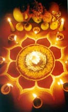

| |
|
 from Travel Corner Nepal Vista_files/tihar.gif)
Days of Tihar :
 from Travel Corner Nepal Vista_files/tiharday1.gif)
|  from Travel Corner Nepal Vista_files/tihar3.gif) Tihar Day 1 - Kag Tihar - Here comes Tihar to teach you a
lesson! Early in the morning of the first day of Tihar, family prepares a good meal. Each member of the family takes the first portion of the meal outside on a platter.
The crows come down in large numbers and partake of the feast, they will call others before beginning to eat : Share,
Share what you have with all! Crows (Kag in Nepali) are considered as the messenger of the Lord of Death, Yama.
There is a popular Nepali superstition of crows too: When the crows caw, sadness is coming.) On this day crows are worshiped and are kept happy. Where there are no crows, any winged animal of the heavens (bird) will enjoy the feast. So Tihar is also about appreciating animals around us. Tihar Day 1 - Kag Tihar - Here comes Tihar to teach you a
lesson! Early in the morning of the first day of Tihar, family prepares a good meal. Each member of the family takes the first portion of the meal outside on a platter.
The crows come down in large numbers and partake of the feast, they will call others before beginning to eat : Share,
Share what you have with all! Crows (Kag in Nepali) are considered as the messenger of the Lord of Death, Yama.
There is a popular Nepali superstition of crows too: When the crows caw, sadness is coming.) On this day crows are worshiped and are kept happy. Where there are no crows, any winged animal of the heavens (bird) will enjoy the feast. So Tihar is also about appreciating animals around us.
|
 from Travel Corner Nepal Vista_files/tiharday2.gif)
|
 from Travel Corner Nepal Vista_files/tihar4.gif) Tihar Day 2 - Kukur Tihar - On the second day of Tihar,
Kukur (Dogs) are adorned with flower garland around their necks, red tika on their forehead, and are offered great meals, they are the king of the day!
On this day, people pray to the Kukur to guard their homes.
Call someone "Kukur", he/she will bash you instantly! There are lots of Kukur running around in search of a loving home.
You can find them on streets and in your backyards, but on this day, even the most unsightly Kukkur will be treated like a king, everyone has a day.
Tihar is also about breaking the boundaries only men created, "The Good", "The Bad", "The Ugly", and all but same to the mother nature! In Hinduism it is believed that Kukur guard's the underworld empire just like it guards our everyday homes!. Tihar is about loving Kukurs too! Tihar Day 2 - Kukur Tihar - On the second day of Tihar,
Kukur (Dogs) are adorned with flower garland around their necks, red tika on their forehead, and are offered great meals, they are the king of the day!
On this day, people pray to the Kukur to guard their homes.
Call someone "Kukur", he/she will bash you instantly! There are lots of Kukur running around in search of a loving home.
You can find them on streets and in your backyards, but on this day, even the most unsightly Kukkur will be treated like a king, everyone has a day.
Tihar is also about breaking the boundaries only men created, "The Good", "The Bad", "The Ugly", and all but same to the mother nature! In Hinduism it is believed that Kukur guard's the underworld empire just like it guards our everyday homes!. Tihar is about loving Kukurs too!
|
 from Travel Corner Nepal Vista_files/tiharday3.gif) |
 from Travel Corner Nepal Vista_files/tihar5.gif) Tihar Day 3 - Cow Tihar - The 3rd day of Tihar is about worshiping the mother of the universe - cow. According to Hinduism, the human infant is fed breast milk by its human mother for
under three years. After weaning, the cow acts as the surrogate mother providing milk for the rest of the human life - through childhood, adult age and old age.
Cows are the mothers of the universe, the sacred animal. The cow puja is performed by giving a tika to a cow on her forehead, and a flower garland (Flower Leis) on the neck,
and offering good meals. Those performing Cow puja place her manure in different parts of the home, drink a drop or two of the cow's urine, as a part of a purification process.
Also dip a blade of grass into the urine and lightly sprinkle it on each other's body to become closer to the mother of the universe - cow. Tihar Day 3 - Cow Tihar - The 3rd day of Tihar is about worshiping the mother of the universe - cow. According to Hinduism, the human infant is fed breast milk by its human mother for
under three years. After weaning, the cow acts as the surrogate mother providing milk for the rest of the human life - through childhood, adult age and old age.
Cows are the mothers of the universe, the sacred animal. The cow puja is performed by giving a tika to a cow on her forehead, and a flower garland (Flower Leis) on the neck,
and offering good meals. Those performing Cow puja place her manure in different parts of the home, drink a drop or two of the cow's urine, as a part of a purification process.
Also dip a blade of grass into the urine and lightly sprinkle it on each other's body to become closer to the mother of the universe - cow.
 from Travel Corner Nepal Vista_files/laxmi.gif) Tihar Day 3 - Laxmi Puja - One
of the most important day of the festival is Laxmi
Puja on which day the Goddess of wealth (Laxmi)
is worshiped in every household in the entire Nepali
Kingdom by means of Puja, decoration, candle lights,
and oil lamps. In this 3rd day of the Tihar Festival,
the entire nation becomes an illumination of lights.
Pictures and icons of Laxmi Devi (Goddess) are placed
and worshiped in a Puja room (or a place in a living
room or a dedicated room for worshiping Gods) Puja
is performed using flowers, incense, oil lamps,
color-powders, bell and money (both notes and coins).
Laxmi puja is performed at dusk using red mud, and
puja is often done by a female in the family. She
uses her hand covered with red mud to make a symbolic
foot-print on the floor entering the home and makes
a trail leading to the Puja room.
Tihar Day 3 - Laxmi Puja - One
of the most important day of the festival is Laxmi
Puja on which day the Goddess of wealth (Laxmi)
is worshiped in every household in the entire Nepali
Kingdom by means of Puja, decoration, candle lights,
and oil lamps. In this 3rd day of the Tihar Festival,
the entire nation becomes an illumination of lights.
Pictures and icons of Laxmi Devi (Goddess) are placed
and worshiped in a Puja room (or a place in a living
room or a dedicated room for worshiping Gods) Puja
is performed using flowers, incense, oil lamps,
color-powders, bell and money (both notes and coins).
Laxmi puja is performed at dusk using red mud, and
puja is often done by a female in the family. She
uses her hand covered with red mud to make a symbolic
foot-print on the floor entering the home and makes
a trail leading to the Puja room.
Laxmi puja is not only for households but is equally
done by Companies. Business-Laxmi-Puja is done exactly
the same way as is done in home. Usually company's
cashier performs the puja during which time the
entire office including office compounds are lit
with various lights including electrical, candle
lights, and oil lamps and usually staffs are invited
to participate in the puja procession.
|
 from Travel Corner Nepal Vista_files/tiharday4.gif)
|
Tihar Day 4 - Mha Puja - The fourth day of the
Tihar is also about worshiping yourself. This puja
(worshiping) is known as as Mahapuja. This is also
the first day of the special annual calendar of an
ethnic group known as Newar residing in Nepal.
The coming of a new year is also celebrated in Tihar.
Also a popular ritual of the day is the Govardhan
puja or Goru Tihar (Oxen Worshiping). Oxen are worshiped
on this day as they till lands and help grow crops
to sustain life.
|
 from Travel Corner Nepal Vista_files/tiharday5.gif)
|
Tihar Day 5 - Bhai Tika : On the final day also known as Bhai Tika Day, sisters give tika (a colored powder placed on once's forehead), and mala
(a necklace of flowers or also known as as flower leis, similar to that's used elsewhere like in Hawaii!)
to brothers along with wishes for long life and prosperity.
To sisters, Tihar is also the time to re-call their continued
wish for a long and a happy life for their brothers. Brothers sit on a floor while sisters perform their puja. Puja involves following
a traditional ritual in which sisters circle brothers three times dripping oil on the floor from a copper pitcher. Afterwards, sisters put oil in brother's ears and hairs, then give Tika.
Also breaking of walnuts by sisters prior to giving Tika to brothers is also a common practice.
Tika starts with placing a banana leave already cut into a line shape placed on brothers forehead held by one of the sisters hand, then applying tika base (made from rice paste) in the open space. Then sister dabs seven colors on top of the base using her fingers. Some may give tika with the help of a small stick or a brush without the using banana leaves. In this case, small stick is dipped into the tika base, then brushed vertically on the forehead, then using a different stick, the seven colors are applied on top of the base. After tika, flower garland is put around brother's neck. Then brothers give tika to sisters in the same fashion. Sisters also receive flower garland around their neck.
Brothers give gifts such as clothes or money to sisters while sisters give a special gift known as Sagun (which is made of dried fruits and nuts, and candies), and a fantastic Tihar feast takes place.
Those without a sister or brother, join relatives or friends for tika. Sisters pray for their brother's long life to the Hindu God of Death (Yam Raj).
|
 |
|
|
|
|  |
 |
|
|
Festival of Nepal
Copyright (c) 2001-2016 Joyal Joshi
https://www.facebook.com/joyal.joshi
|